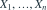
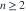
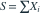
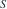
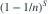
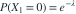
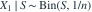
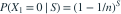

独立同分布于 ，
。令
，用充分统计量
对无偏估计 作 Rao-Blackwell 改进。得到的 的估计为哪项？- A
- B
- C
- D

我已思考，展开答案与解析
正确答案：D
- 原估计的期望为

。 - 给定 S 后，

，故条件期望为
。 - 条件化保留无偏性且方差不增；S 也完全充分，故该估计是 UMVU。
易错提醒将参数估计代入指数函数一般不能保持无偏性。
原模拟卷 A · 模拟卷 A 第 30 题
原创